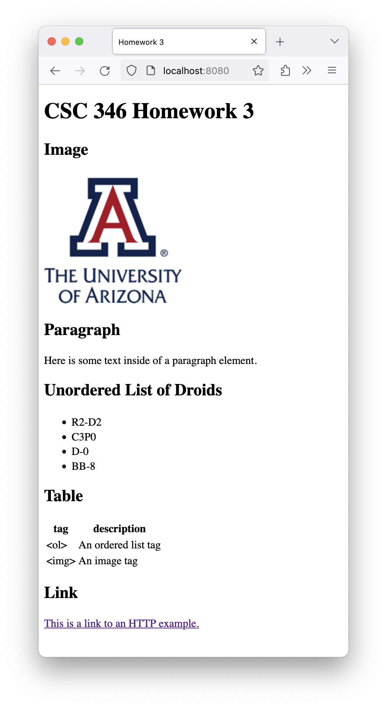
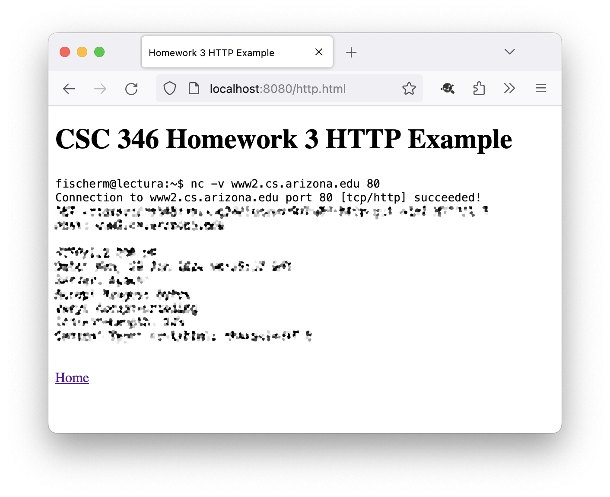
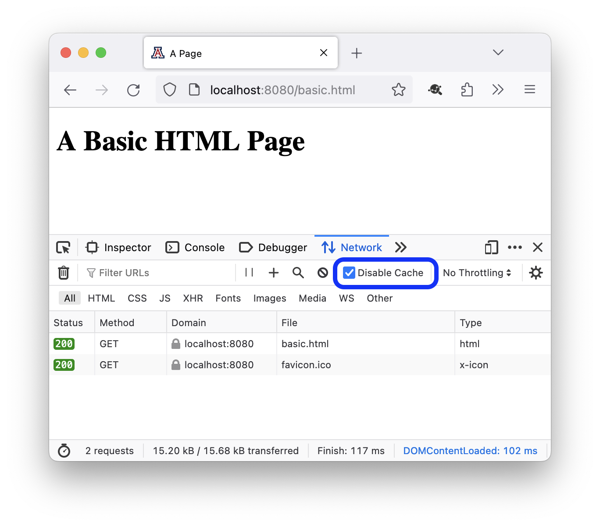

CSC 346 - Homework 3 #
In this homework assignment we'll be working with the HTTP protocol, and writing our own HTML web pages. You will turn in a .zip file of a folder containing the following files:
What to turn in #
yournetid-hw03/
Dockerfile
html/
index.html
http.html
images/
ua-logo.png
You don't have to turn in the contents of the scripts folder that comes in the starter zip, but it's fine if you do.
Double Check! Not sure if your .zip file is correct? Try expanding it and see what's actually inside before you turn it in.
Points #
This assignment will be worth 50 points. Turning the assignment in early will earn you an additional 3 points extra credit.
- Early submission: February 8th 11pm MST (UTC-7)
- Final Due Date: February 10th 11pm MST (UTC-7)
Getting Started #
The starter zip for this assignment contains an empty Dockerfile you will fill out with commands to build an image, as well as an empty html folder, and some .sh and .ps1 scripts to assist with building your image and running your container. You don't have to use these scripts, but they might help.
https://www2.cs.arizona.edu/classes/cs346/spring24/homework/NETID-hw03.zip
Inside of the html folder, create one last folder named images. This is where you will put the University of Arizona logo after you download it.
{kind=link}
Part 1 - Dockerfile #
In order to view our webpage, we will include it in a docker container running the nginx web server.
If you want the convenience of not having to rebuild your docker image each time you change your web page, remember that you can mount in a folder from your working directory in the docker run command:
docker run -i --rm --name hw -p 8080:80 \
-v "$PWD/html:/usr/share/nginx/html/" nginx:1.25
See scripts/dev.* for helper scripts.
You can now open your page in a browser by visiting http://localhost:8080/.
This lets you edit and save your HTML pages, and just hit reload in your browser window, speeding up your development process.
Once you are comfortable that you have your HTML files correct, you will need to update the starter Dockerfile to COPY the contents of the html folder from your project directory inside the container in the correct location, so that when the container is run, your new site will be displayed.
You can then build and run your container with the following commands:
docker build --tag hw:latest .
docker run -i --rm --name hw -p 8080:80 hw:latest
See scripts/build.* and scripts/run.* for helper scripts.
Not seeing what you expect? Seeing the default nginx page or maybe the page from Homework 2? Web browsers cache contents, and may not have actually reloaded your location. Check the Troubleshooting section below.
Part 2 - index.html #
Create a new text file inside of the html folder called index.html. The names of these files is significant. The web server looks for .html files inside of its location root directory to serve up as html content. Additionally the special name of index.html means that the web server will return this page when just the directory containing that index is requested, ie the following two requests will result in the same page being returned.
GET /homework/ HTTP/1.1
GET /homework/index.html HTTP/1.1
Note: this is a feature of the web server, not the HTTP protocol.
See the location section of the default.conf file for nginx from homework 2.
location / {
root /usr/share/nginx/html;
index index.html index.htm;
}
index.html contents #
Your index.html page must contain the following:
- The !doctype
htmlelementheadelementtitleelement with contents of "Homework 3"bodyelementh1header element with contents of "CSC 346 Homework 3"h2header element with contents of "Image"pelement with animgelement inside it, with theua-logo.pngimage as its source. You can download theua-logo.pngfrom this link.- The
imgtag should have thealtattribute set inside of it to "The official 'Block A' logo for the University of Arizona."
- The
h2header element with contents of "Paragraph"pelement with contents of "Here is some text inside of a paragraph element."h2header element with contents of "Unordered List of Droids"ulunordered list containing 4 list items (lielements): R2-D2, C3P0, D-0, BB-8.h2header element with contents of "Table"tablewith 2 columns, table headers, and 2 data rows:- Column headers of "tag" and "description"
- Two rows describing the following basic HTML elements, with the name of the tag in the first column, and the description in the second.
<ol>: An ordered list tag<img>: An image tag
h2header element with contents of "Link"pelement with the text "This is a link to an HTTP example." and have that text be a clickableaelement that goes to a second page namedhttp.html.
When finished, your page should look pretty close to the following:

Wait! How do we show HTML elements in an HTML page? You have to use HTML entity encoding. https://developer.mozilla.org/en-US/docs/Glossary/Entity
Part 3 - http.html #
For our second web page, we want to have it show the output of a nc call that you make in a terminal window. Similar to the first assignment, where you ran commands in the terminal and copy/pasted the results in to a text file. This time you'll copy and paste the results into an HTML file.
http.html contents #
Create a new text file inside your html folder, and name it http.html. Similar to the index page, this new page needs to have html, head, title, and body elemetnts. Inside the body element for this page place the following:
titleelement should have the contents "Homework 3 HTTP Example"h1element with contents of "CSC 346 Homework 3 HTTP Example"pelement containing apreelement- Inside the
p > preelement, show a full HTTP/1.1 request thatGETs a sample page from the course website: https://www2.cs.arizona.edu/classes/cs346/spring24/homework/hw03-http-get.html - Include ONLY the response code and response headers. Not the HTML text from the response body.
- Inside the
pelement with the text "Home" which is anaanchor tag that takes us back toindex.html.
If your laptop doesn't have the
nccommand, SSH tolectura.cs.arizona.eduand run it from there.fischerm@lectura:~$ nc -v www2.cs.arizona.edu 80
www2.cs.arizona.edu has a relatively short timeout period. Unlike example.com, if you don't send a valid HTTP request within about 10 seconds, you'll either get aHTTP/1.1 408 Request Time-outerror, or the connection will just close. Try typing your request in a separate text document and then pasting it into yourncsocket. Don't forget the two CRLF sequences required to end the HTTP request!

Troubleshooting #
Check Cacheing #
Modern web browsers will cache many of the resources we request: HTML pages, CSS files, Javascript files, images, etc. This is great for performance and speed, but drives us crazy as developers. If you find yourself making changes and not having them show up when you reload the browser, it might be a cacheing issue.
Firefox: Disable Cacheing #
If you're using the Firefox web browser, you can disable cacheing when the developer tools are open.
- From the Tools menu, go to the Browser Tools submenu, and select "Web Developer Tools". Or, right-click anywhere on the page and select "Inspect" from the context menu.
- From the developer tools that opens in the lower part of the window, select the "Network" tab.
- In the toolbar just below the tabs, check the "Disable Cache" checkbox.
Firefox will remember this checkbox from session to session, but it will only function if the Web Developer Tools panel is open.

Shift-Reload #
Most browsers will treat a "Shift-Reaload" action as instructiong the browser to not use the cache for the next set of requests and instead download all the resources again. Different browsers do this differently. Some work with Shift-Ctrl-R but others only work if you hold down the Shift key while clicking the reload button in a toolbar.
Reload a bunch #
Sometimes if you just mash the reload button several times, the browser gets the hint and actually reloads the page.
Flush Caches #
All browsers have a way to flush the cache. However this can sometimes flush all of the cached data in your browser, including 'remembered' logins to other websites.
Private Window / Incognito Window #
Opening a new private window will effectively start with an empty cache. This is sometimes the best way to make sure you're "starting fresh" with a website or HTTP request.